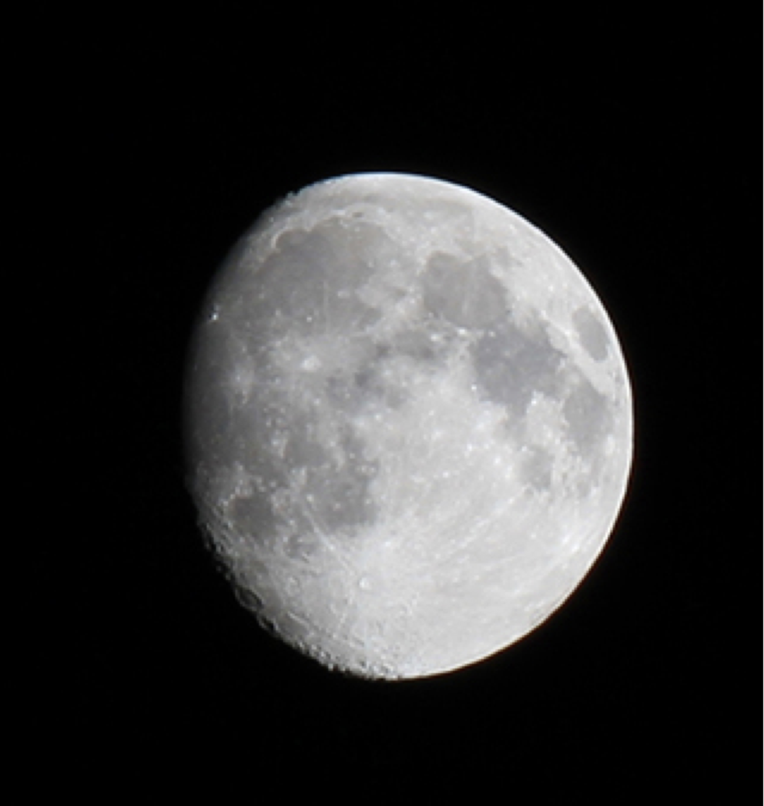

The Moon is the only natural satellite of the Earth, and the fifth largest satellite in the Solar System. It is the largest natural satellite of a planet in the Solar System relative to the size of its primary, having a quarter the diameter of Earth but only 1⁄81 its' mass.
Statistics